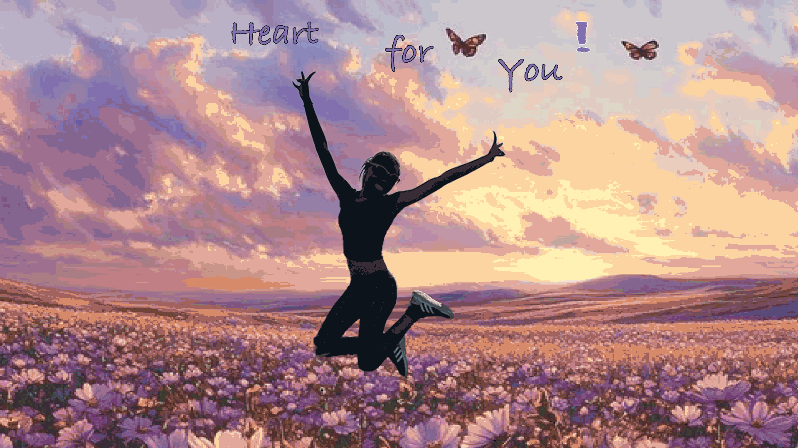

Blink Animation
For the blink animation, I used the emotive eye that I created in Adobe Illustrator. In Illustrator, I added a separate layer for each fraction of the eyelid closing to being fully closed, and labelled each layer. When importing the images into Photoshop, I also duplicated some layers to ensure the animation loops seamlessly from open to closed and back again. After, I used the timeline panel to create a frame animation, and I modified the speed for each panel for a smooth blink effect.
Cut-Up Cinema
For the cut-up cinema, I used a photo of myself jumping in mid-air. After importing the photo into Photoshop, I masked it to get rid of the background and then used the Puppet Warp tool to start experimenting with pose variations. Adding different pins along the image and figuring out what I wanted the animation to do was fun to test out. I duplicated each layer as I edited the image slightly and adjusted the speed to also create a cohesive motion. I also added a background with text just to add more visuals to the animation.

Reflection
Creating these animations was actually tedious in some aspects, but when the animation plays through just like you want it to, it feels more enjoyable seeing it come together. I was very satisfied with each GIF and admired the different forms of expression they both showcase. It was nice to learn new techniques and how slight changes can completely change one emotion to another, like modifying the speed, or how it may be perceived, due to the body movements.